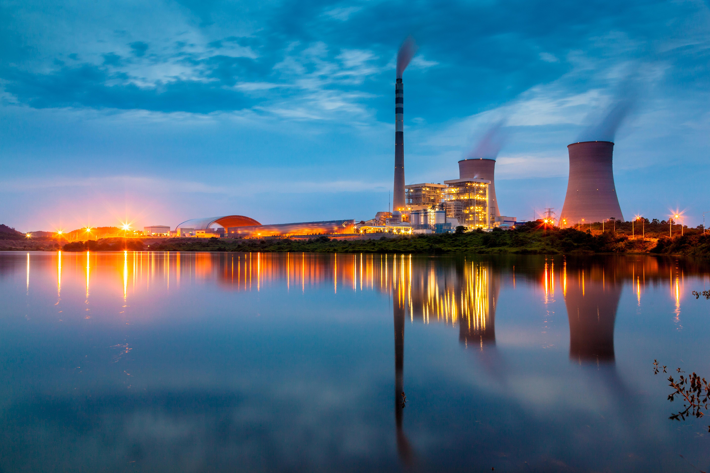

Publicly owned since 1938.
City Power Station has generated and delivered Adversary City's electricity for 88 years, run as a city department and overseen by an elected and appointed Board of Public Utilities rather than shareholders.
Utility facts
- 210 MW Generating Capacity
- 340 mi Distribution Line
- 6 Substations
- 211 Employees

From one coal boiler to a mixed grid.
Six milestones that shaped how Adversary City gets its power.
-
1938
Adversary City Light & Power Department founded
The city council votes to build and own its own generating plant rather than buy power from a private utility. Riverside Station's original coal-fired unit comes online the following year.
-
1961
Boilers converted from coal to natural gas
Rising coal-delivery costs push the department to convert Riverside Station's boilers, cutting fuel costs and downtime for the first time in two decades.
-
1985
Riverside Substation grid expands west
Following the city's westward annexation, a new substation and 40 miles of line bring service to neighborhoods that had relied on a neighboring county utility.
-
2009
Smart meter rollout begins
Automated meters replace manual monthly readings across the service area, cutting estimated bills and shortening outage detection time from hours to minutes.
-
2021
Riverside Solar Array comes online
A 15 MW array adjacent to the station becomes the utility's first renewable generating source, now supplying about 15% of annual generation.
-
2026
Grid modernization continues
Lines through the Harbor Line flood corridor are being moved underground in phases, with the first phase scheduled to finish next spring.
Where this year's power comes from.
A mix of purchased regional power, natural gas peaking capacity for high-demand hours, and the city's own solar array.
- Purchased grid power, 58%
- Natural gas peaking, 27%
- Riverside Solar Array, 15%
Board of Public Utilities & leadership.
Four appointed commissioners and one elected chair set rates and policy. A general manager runs day-to-day operations.
-
Leslie Knope Board Chair, Board of Public Utilities
Elected citywide to a four-year term. Chairs monthly public meetings and casts the deciding vote on rate cases.
-
Ben Wyatt General Manager
Oversees generation, distribution, customer service, and the department's roughly 211 employees.
-
Winston Bishop Chief Engineer, Grid Operations
Runs the control room and the crews who maintain Riverside Station's generating units and the six substations.
-
Donna Meagle Director of Customer Service
Oversees billing, rate plans, and the energy efficiency and assistance programs.
-
Dwight Schrute Safety & Compliance Officer
Runs line-crew safety training and coordinates downed-line response with the fire department.